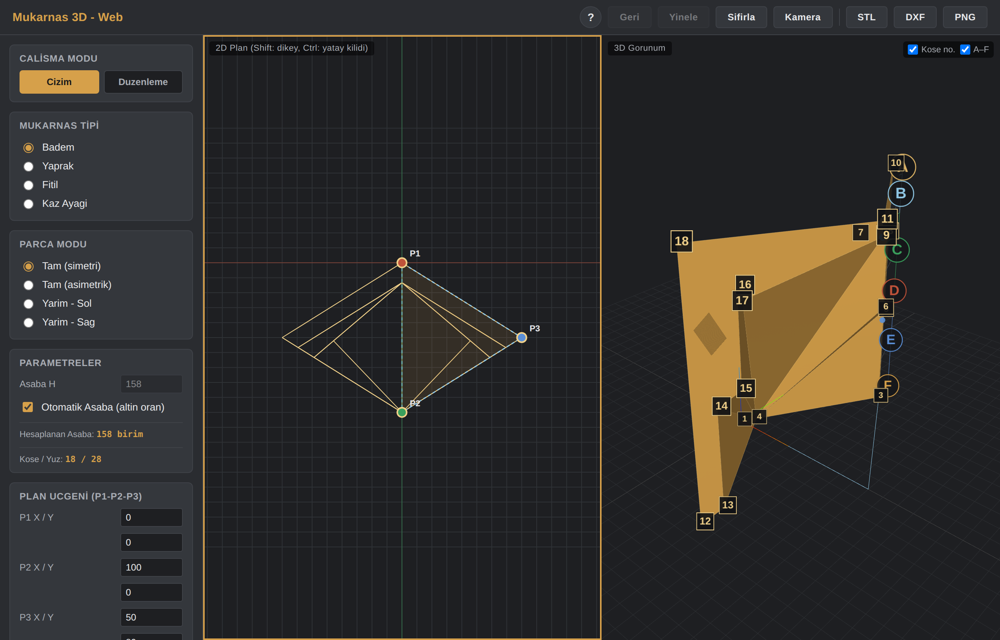
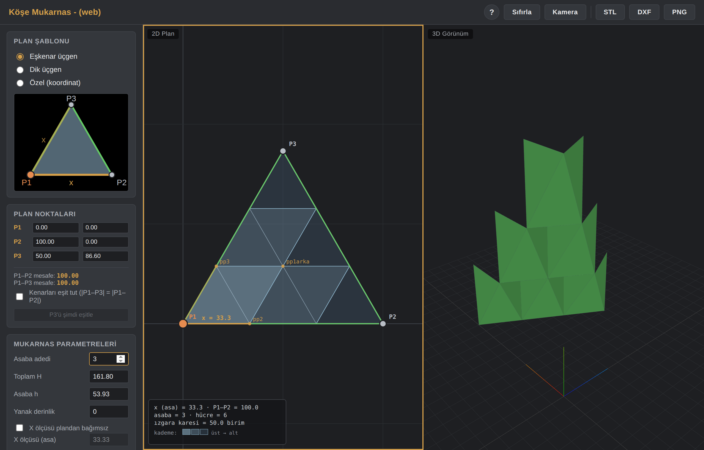
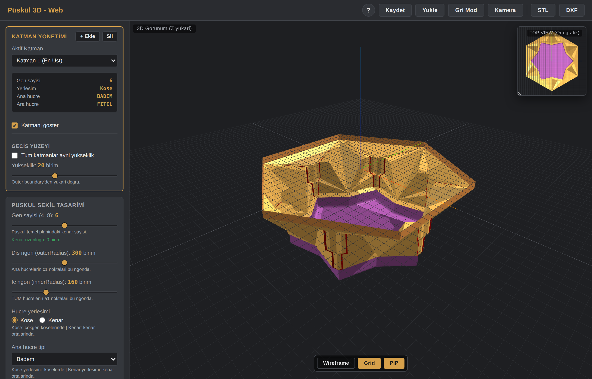
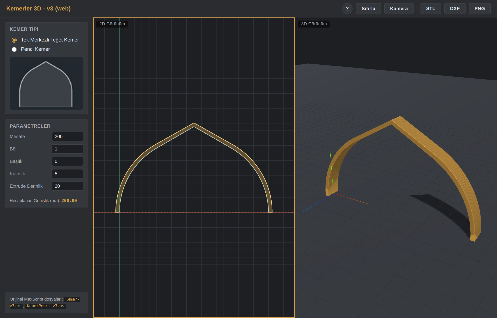
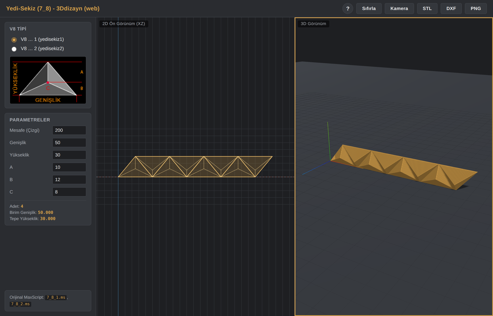
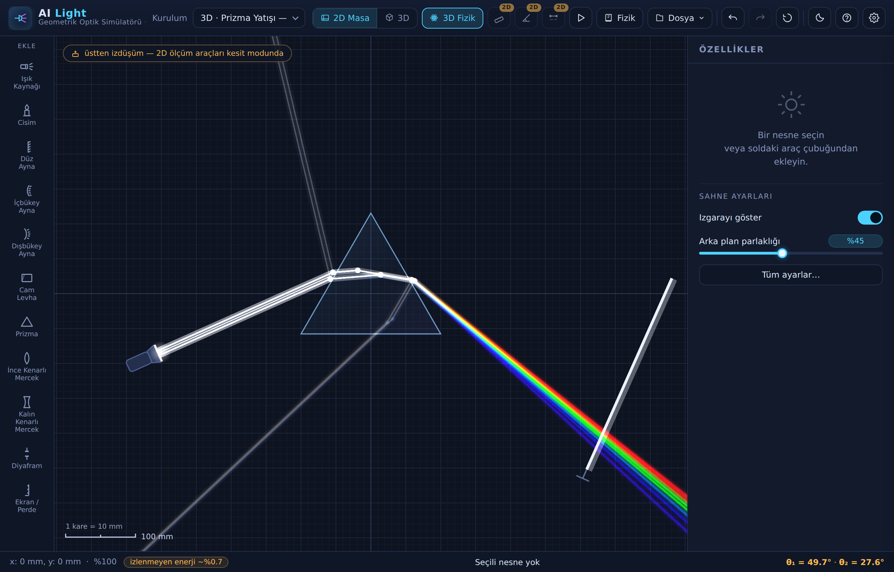
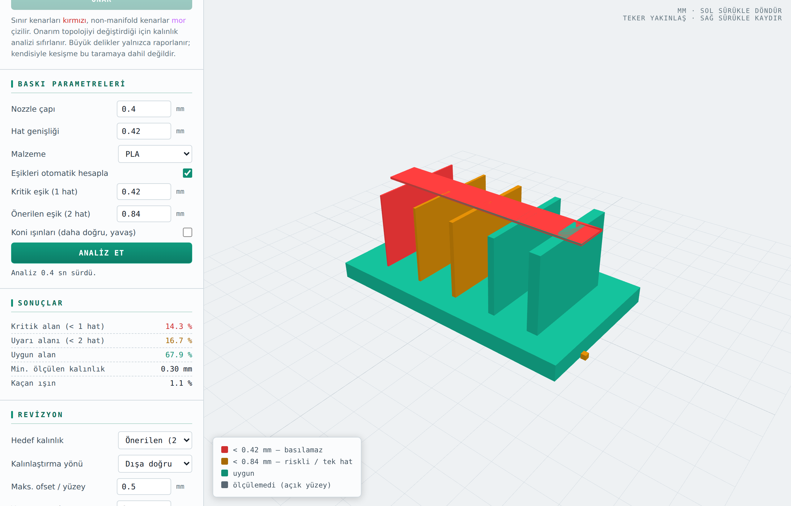
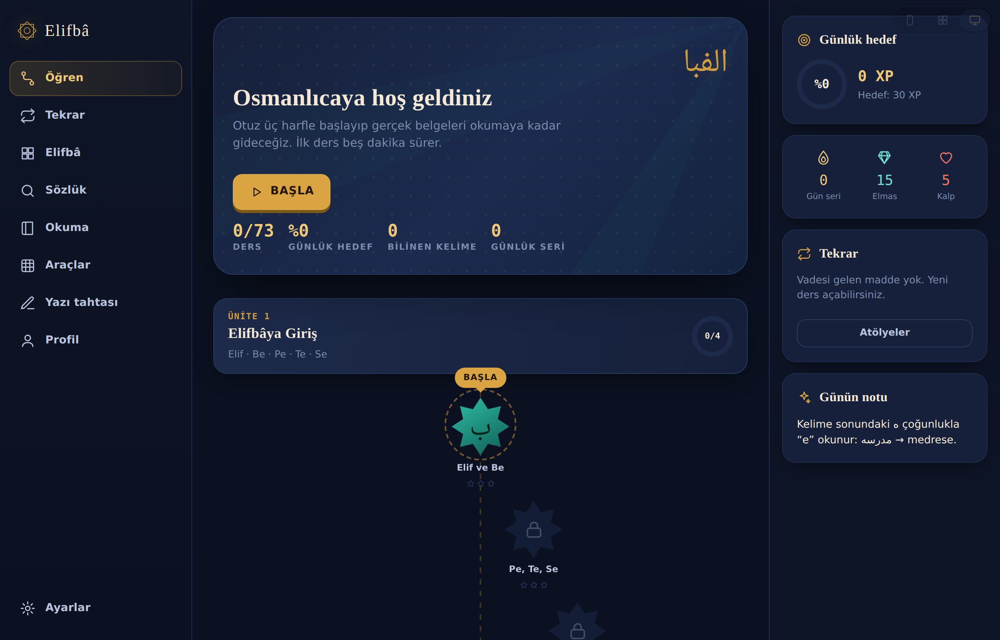

Mimari Geometri
Geleneksel mimari formları parametrelerle modelleyen araçlar. 2B plan ve 3B görünüm eş zamanlı çalışır; sonuç DXF, STL veya PNG olarak dışa aktarılır.

Köşe Mukarnas
Köşe mukarnaslarını üçgen plan üzerinden kurgular; asaba sayısıyla kademelenir.

Püskül 3D
Çok katmanlı püskül (sarkıt) yapıları; hücre tipi atama ve geçiş yüzeyleri.

Kemerler 3D
Tek merkezli teğet ve penci kemer tiplerini parametrelerle 3B modeller.

Yedi-Sekiz (7-8)
Geleneksel yedi-sekiz geçme desenlerini V8 tipi parametrelerle üretir.
Üretim ve Analiz
Ölçen, denetleyen ve sonucu görselleştiren araçlar.

AI Light
YeniGeometrik optik simülatörü: mercek, ayna, prizma ve diyaframla ışın izleme, gerçek/sanal görüntü, tayf ayrışması.

3D Print Model Kontrol
STL modellerde FDM et kalınlığını ölçer, basılamaz bölgeleri renklendirir; onarım ve ölçek düzeltme yapar.
Öğrenme
Bir konuyu sıfırdan öğretmek için tasarlanmış uygulamalar.

Elifbâ — Osmanlıca Öğren
Osmanlı Türkçesini sıfırdan öğretir: 17 ünite, 73 ders, aralıklı tekrar ve yazı tahtası.